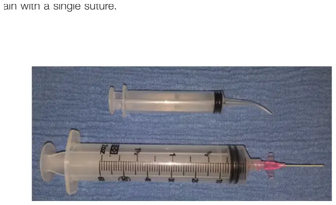

نسخه استخراجشده؛ ترجمه یا تأیید علمی انجام نشده است. وضعیت: captured
اصل پنجم مدیریت عفونت اودنتوژنیک: از بیمار حمایت پزشکی کن.
حمایت سیستمیک، جزئی جداییناپذیر از مدیریت عفونتهای اودنتوژنیک است — چون همانطور که دیدی، در نهایت دفاع میزبان بیمار است که عفونت را شکست میدهد.

و منطق زمانیاش این است: پس از حذف منشأ عفونت و تخلیهی آن، بار باکتریایی کاهش مییابد. حالا نقش درمانگر این است که توانایی بیمار در حذف عفونت باقیمانده را با ابزارهای حمایتی بهینه کند.
و پنج اقدام حمایتی عبارتاند از:
و توجه کن که آنتیبیوتیک، یکی از پنج اقدام حمایتی است — نه درمان اصلی. این جایگاهگذاری، خودش بخشی از آموزش است.
یک واقعیت بالینی که اغلب نادیده گرفته میشود: بیشتر بیمارانی که با عفونت اودنتوژنیک مراجعه میکنند، به علت دریافت خوراکی ضعیف ناشی از درد و ناراحتی، دهیدراته و کمتغذیهاند.
و نتیجهی عملی: مراقبت جراحی کامل — یعنی کنترل منشأ و برش و تخلیه — باید همیشه با کنترل کافی درد و تشویق به هیدراتاسیون خوراکی (یا وریدی) و بهبود دریافت غذایی تکمیل شود.
و خبر خوب: برای اکثریت قاطع بیماران، همین اقدامات، حمایت لازم از سیستم دفاعی میزبان را برای یک بهبودی بیحادثه فراهم میکند.
و برای بیمار بهشدت دهیدراته: درمانگر میتواند تصمیم بگیرد مایعات را بهصورت وریدی بدهد تا حجم داخل عروقی از دست رفته را جبران کند.
و دو نکتهی متابولیک:
یعنی یک حلقهی معیوب: عفونت قند را بالا میبرد، قند بالا دفاع میزبان را ضعیف میکند، و دفاع ضعیف عفونت را بدتر میکند. کنترل قند خون، همان جایی است که این حلقه شکسته میشود.